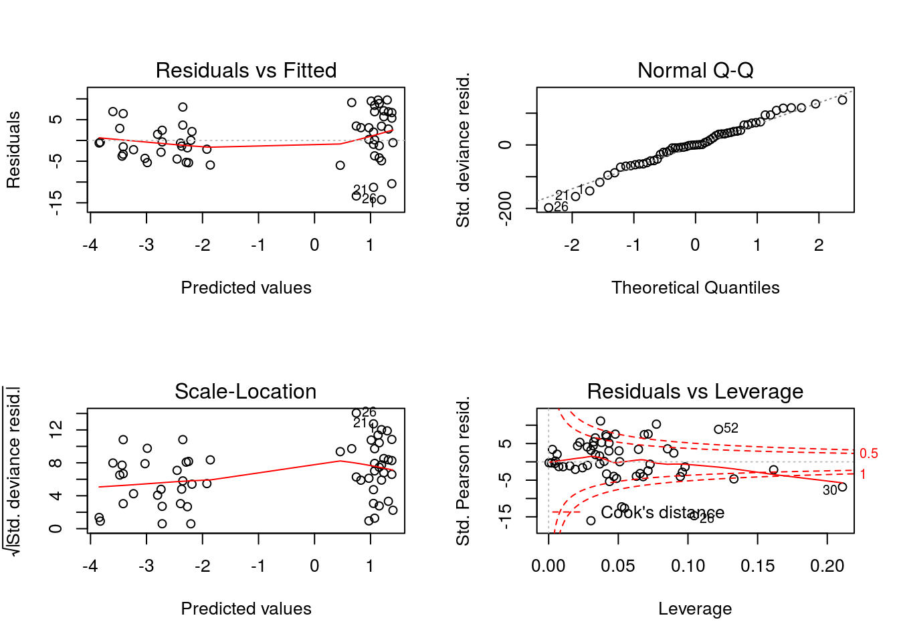
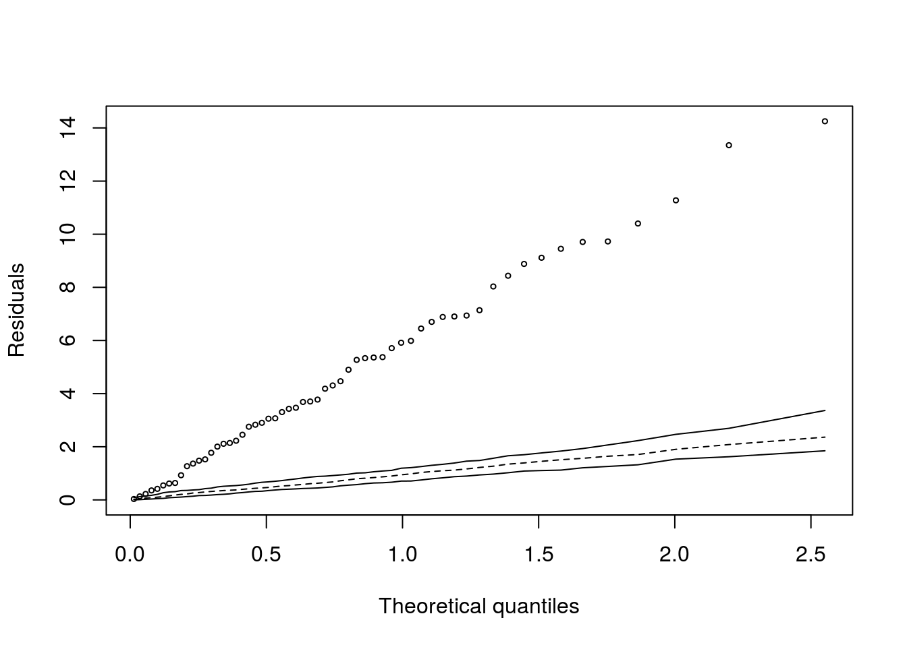
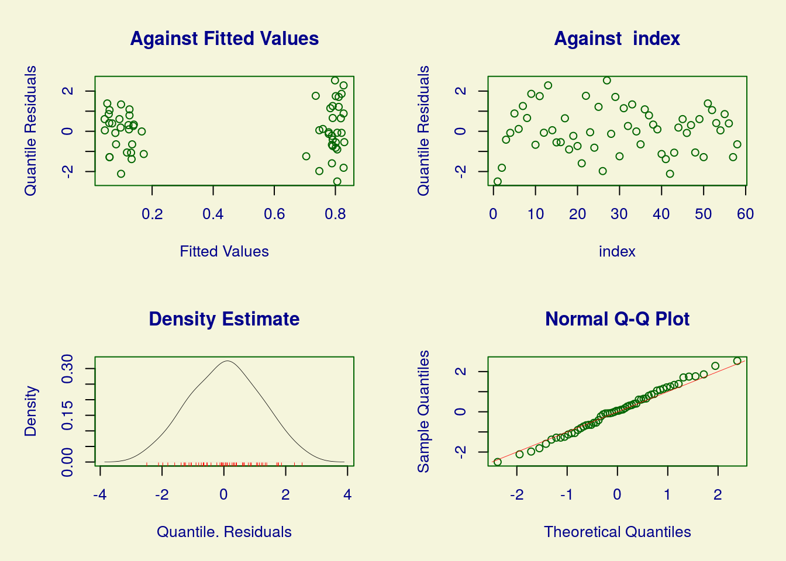
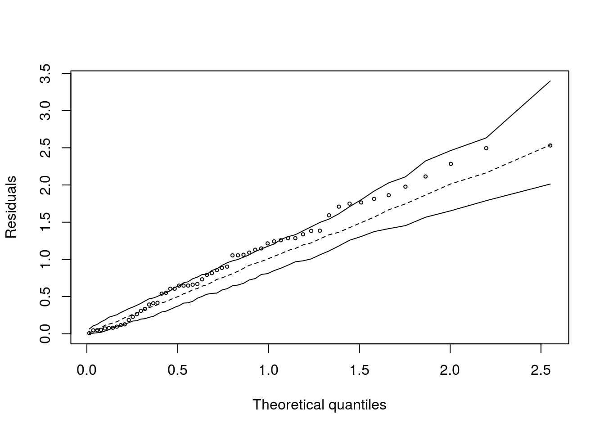
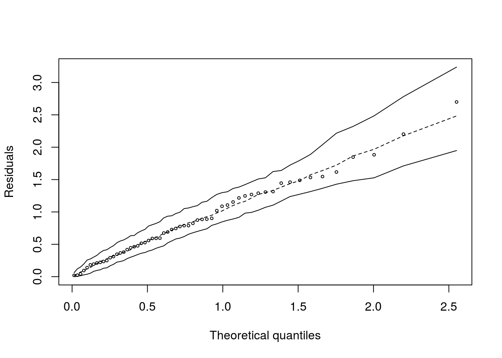

Dados:
Teratologia é o estudo de anormalidades do desenvolvimento fisiológico. Alguns experimentos têm por objetivo investigar os efeitos de dietas ou agentes químicos no desenvolvimento fetal de ratos. Neste estudo, ratos (fêmeas) com deficiência de ferro divididos em quatro grupos. Os ratos do grupo 1 receberam injeções de placebo e, os ratos dos outros grupos, injeções de suplemento de ferro. As aplicações foram feitas nos dias 7 e 10 para os ratos do grupo 2; nos dias 0 e 7 para os ratos do grupo 3, e semanalmente para os ratos dos grupo 4. Os 58 ratos foram sacrificados após três semanas e então o número de fetos mortos em cada ninhada foi contado, além do nível de hemoglobina da mãe. Devido à variabilidade genética, a probabilidade de morte pode variar entre ninhadas para uma mesma combinação de tratamento e nível de hemoglobina.
Se o carregamento dos dados não funcionar, salve o arquivo txt em sua máquina e importe localmente.
Vamos modelar a probabilidade de morte para um feto em função do tratamento (vamos considerar apenas controle vs tratado) ajustado pelo nível de hemoglobina. As variáveis são as seguintes:
litter: indicador de ninhada;
group: grupo (tratamento);
h: nível de hemoglobina da mãe;
n: número de fetos;
s: número de fetos mortos.
ajuste_bin <- glm(cbind(s,n-s) ~ group + h, weights = n, family = 'binomial', data = dados)
par(mfrow = c(2,2))
plot(ajuste_bin)
## Binomial model
##
## Call:
## glm(formula = cbind(s, n - s) ~ group + h, family = "binomial",
## data = dados, weights = n)
##
## Deviance Residuals:
## Min 1Q Median 3Q Max
## -14.251 -3.604 -0.162 4.941 9.728
##
## Coefficients:
## Estimate Std. Error z value Pr(>|z|)
## (Intercept) 2.0348 0.1111 18.31 <2e-16 ***
## groupTreatment -2.4837 0.1378 -18.02 <2e-16 ***
## h -0.2046 0.0216 -9.48 <2e-16 ***
## ---
## Signif. codes: 0 '***' 0.001 '**' 0.01 '*' 0.05 '.' 0.1 ' ' 1
##
## (Dispersion parameter for binomial family taken to be 1)
##
## Null deviance: 5794.5 on 57 degrees of freedom
## Residual deviance: 1926.9 on 55 degrees of freedom
## AIC: 2758
##
## Number of Fisher Scoring iterations: 5Observe o valor da deviance residual (170.57) bastante acima do correspondente número de graus de liberdade (55). Além disso, os resíduos fornecem forte evidência de que o modelo não está bem ajustado.
Para ajustar o modelo beta binomial, implementado na biblioteca gamlss
## GAMLSS-RS iteration 1: Global Deviance = 189.6
## GAMLSS-RS iteration 2: Global Deviance = 186.5
## GAMLSS-RS iteration 3: Global Deviance = 186.4
## GAMLSS-RS iteration 4: Global Deviance = 186.4
## GAMLSS-RS iteration 5: Global Deviance = 186.4## ******************************************************************
## Family: c("BB", "Beta Binomial")
##
## Call: gamlss(formula = cbind(s, n - s) ~ group + h, family = BB,
## data = dados)
##
## Fitting method: RS()
##
## ------------------------------------------------------------------
## Mu link function: logit
## Mu Coefficients:
## Estimate Std. Error t value Pr(>|t|)
## (Intercept) 2.058 0.559 3.68 0.00054 ***
## groupTreatment -2.560 0.743 -3.45 0.00111 **
## h -0.154 0.107 -1.44 0.15575
## ---
## Signif. codes: 0 '***' 0.001 '**' 0.01 '*' 0.05 '.' 0.1 ' ' 1
##
## ------------------------------------------------------------------
## Sigma link function: log
## Sigma Coefficients:
## Estimate Std. Error t value Pr(>|t|)
## (Intercept) -1.167 0.334 -3.49 0.00096 ***
## ---
## Signif. codes: 0 '***' 0.001 '**' 0.01 '*' 0.05 '.' 0.1 ' ' 1
##
## ------------------------------------------------------------------
## No. of observations in the fit: 58
## Degrees of Freedom for the fit: 4
## Residual Deg. of Freedom: 54
## at cycle: 5
##
## Global Deviance: 186.4
## AIC: 194.4
## SBC: 202.6
## ******************************************************************
## ******************************************************************
## Summary of the Randomised Quantile Residuals
## mean = 0.04582
## variance = 1.293
## coef. of skewness = -0.02439
## coef. of kurtosis = 2.419
## Filliben correlation coefficient = 0.9976
## ******************************************************************## Beta-binomial model (using gamlss)
## GAMLSS-RS iteration 1: Global Deviance = 177.7
## GAMLSS-RS iteration 2: Global Deviance = 169.5
## GAMLSS-RS iteration 3: Global Deviance = 169
## GAMLSS-RS iteration 4: Global Deviance = 169
## GAMLSS-RS iteration 5: Global Deviance = 169
## GAMLSS-RS iteration 1: Global Deviance = 197.8
## GAMLSS-RS iteration 2: Global Deviance = 193.7
## GAMLSS-RS iteration 3: Global Deviance = 193.6
## GAMLSS-RS iteration 4: Global Deviance = 193.6
## GAMLSS-RS iteration 5: Global Deviance = 193.6
## GAMLSS-RS iteration 1: Global Deviance = 189.2
## GAMLSS-RS iteration 2: Global Deviance = 185.8
## GAMLSS-RS iteration 3: Global Deviance = 185.6
## GAMLSS-RS iteration 4: Global Deviance = 185.6
## GAMLSS-RS iteration 5: Global Deviance = 185.6
## GAMLSS-RS iteration 1: Global Deviance = 179.2
## GAMLSS-RS iteration 2: Global Deviance = 175.5
## GAMLSS-RS iteration 3: Global Deviance = 175.3
## GAMLSS-RS iteration 4: Global Deviance = 175.3
## GAMLSS-RS iteration 5: Global Deviance = 175.3
## GAMLSS-RS iteration 1: Global Deviance = 182.1
## GAMLSS-RS iteration 2: Global Deviance = 175.6
## GAMLSS-RS iteration 3: Global Deviance = 175.1
## GAMLSS-RS iteration 4: Global Deviance = 175.1
## GAMLSS-RS iteration 5: Global Deviance = 175.1
## GAMLSS-RS iteration 1: Global Deviance = 180.2
## GAMLSS-RS iteration 2: Global Deviance = 176.5
## GAMLSS-RS iteration 3: Global Deviance = 176.4
## GAMLSS-RS iteration 4: Global Deviance = 176.4
## GAMLSS-RS iteration 5: Global Deviance = 176.4
## GAMLSS-RS iteration 1: Global Deviance = 208.8
## GAMLSS-RS iteration 2: Global Deviance = 204.8
## GAMLSS-RS iteration 3: Global Deviance = 204.8
## GAMLSS-RS iteration 4: Global Deviance = 204.8
## GAMLSS-RS iteration 1: Global Deviance = 191.7
## GAMLSS-RS iteration 2: Global Deviance = 185.6
## GAMLSS-RS iteration 3: Global Deviance = 185.4
## GAMLSS-RS iteration 4: Global Deviance = 185.4
## GAMLSS-RS iteration 5: Global Deviance = 185.4
## GAMLSS-RS iteration 1: Global Deviance = 213.7
## GAMLSS-RS iteration 2: Global Deviance = 212.3
## GAMLSS-RS iteration 3: Global Deviance = 212.2
## GAMLSS-RS iteration 4: Global Deviance = 212.2
## GAMLSS-RS iteration 1: Global Deviance = 214.4
## GAMLSS-RS iteration 2: Global Deviance = 212.2
## GAMLSS-RS iteration 3: Global Deviance = 212.2
## GAMLSS-RS iteration 4: Global Deviance = 212.1
## GAMLSS-RS iteration 5: Global Deviance = 212.1
## GAMLSS-RS iteration 1: Global Deviance = 177.8
## GAMLSS-RS iteration 2: Global Deviance = 173.7
## GAMLSS-RS iteration 3: Global Deviance = 173.5
## GAMLSS-RS iteration 4: Global Deviance = 173.5
## GAMLSS-RS iteration 5: Global Deviance = 173.5
## GAMLSS-RS iteration 1: Global Deviance = 201.4
## GAMLSS-RS iteration 2: Global Deviance = 200.7
## GAMLSS-RS iteration 3: Global Deviance = 200.7
## GAMLSS-RS iteration 4: Global Deviance = 200.7
## GAMLSS-RS iteration 1: Global Deviance = 186.6
## GAMLSS-RS iteration 2: Global Deviance = 184.5
## GAMLSS-RS iteration 3: Global Deviance = 184.4
## GAMLSS-RS iteration 4: Global Deviance = 184.4
## GAMLSS-RS iteration 1: Global Deviance = 191.5
## GAMLSS-RS iteration 2: Global Deviance = 188.7
## GAMLSS-RS iteration 3: Global Deviance = 188.5
## GAMLSS-RS iteration 4: Global Deviance = 188.5
## GAMLSS-RS iteration 5: Global Deviance = 188.5
## GAMLSS-RS iteration 1: Global Deviance = 172.8
## GAMLSS-RS iteration 2: Global Deviance = 168.9
## GAMLSS-RS iteration 3: Global Deviance = 168.7
## GAMLSS-RS iteration 4: Global Deviance = 168.7
## GAMLSS-RS iteration 5: Global Deviance = 168.7
## GAMLSS-RS iteration 1: Global Deviance = 219.7
## GAMLSS-RS iteration 2: Global Deviance = 215.8
## GAMLSS-RS iteration 3: Global Deviance = 215.7
## GAMLSS-RS iteration 4: Global Deviance = 215.7
## GAMLSS-RS iteration 1: Global Deviance = 187.2
## GAMLSS-RS iteration 2: Global Deviance = 185.3
## GAMLSS-RS iteration 3: Global Deviance = 185.2
## GAMLSS-RS iteration 4: Global Deviance = 185.2
## GAMLSS-RS iteration 5: Global Deviance = 185.2
## GAMLSS-RS iteration 1: Global Deviance = 173.9
## GAMLSS-RS iteration 2: Global Deviance = 171.2
## GAMLSS-RS iteration 3: Global Deviance = 171
## GAMLSS-RS iteration 4: Global Deviance = 171
## GAMLSS-RS iteration 5: Global Deviance = 171
## GAMLSS-RS iteration 1: Global Deviance = 165.4
## GAMLSS-RS iteration 2: Global Deviance = 160
## GAMLSS-RS iteration 3: Global Deviance = 159.5
## GAMLSS-RS iteration 4: Global Deviance = 159.5
## GAMLSS-RS iteration 5: Global Deviance = 159.5
## GAMLSS-RS iteration 1: Global Deviance = 210.1
## GAMLSS-RS iteration 2: Global Deviance = 207.8
## GAMLSS-RS iteration 3: Global Deviance = 207.8
## GAMLSS-RS iteration 4: Global Deviance = 207.8
## GAMLSS-RS iteration 1: Global Deviance = 183.3
## GAMLSS-RS iteration 2: Global Deviance = 178
## GAMLSS-RS iteration 3: Global Deviance = 177.8
## GAMLSS-RS iteration 4: Global Deviance = 177.8
## GAMLSS-RS iteration 5: Global Deviance = 177.8
## GAMLSS-RS iteration 1: Global Deviance = 199.1
## GAMLSS-RS iteration 2: Global Deviance = 197.5
## GAMLSS-RS iteration 3: Global Deviance = 197.4
## GAMLSS-RS iteration 4: Global Deviance = 197.4
## GAMLSS-RS iteration 1: Global Deviance = 181.8
## GAMLSS-RS iteration 2: Global Deviance = 179.9
## GAMLSS-RS iteration 3: Global Deviance = 179.8
## GAMLSS-RS iteration 4: Global Deviance = 179.8
## GAMLSS-RS iteration 5: Global Deviance = 179.8
## GAMLSS-RS iteration 1: Global Deviance = 172.9
## GAMLSS-RS iteration 2: Global Deviance = 170.9
## GAMLSS-RS iteration 3: Global Deviance = 170.8
## GAMLSS-RS iteration 4: Global Deviance = 170.8
## GAMLSS-RS iteration 5: Global Deviance = 170.8
## GAMLSS-RS iteration 1: Global Deviance = 182.2
## GAMLSS-RS iteration 2: Global Deviance = 176
## GAMLSS-RS iteration 3: Global Deviance = 175.5
## GAMLSS-RS iteration 4: Global Deviance = 175.5
## GAMLSS-RS iteration 5: Global Deviance = 175.5
## GAMLSS-RS iteration 1: Global Deviance = 159.1
## GAMLSS-RS iteration 2: Global Deviance = 158.7
## GAMLSS-RS iteration 3: Global Deviance = 158.7
## GAMLSS-RS iteration 4: Global Deviance = 158.7
## GAMLSS-RS iteration 5: Global Deviance = 158.7
## GAMLSS-RS iteration 1: Global Deviance = 189.7
## GAMLSS-RS iteration 2: Global Deviance = 187.9
## GAMLSS-RS iteration 3: Global Deviance = 187.8
## GAMLSS-RS iteration 4: Global Deviance = 187.8
## GAMLSS-RS iteration 5: Global Deviance = 187.8
## GAMLSS-RS iteration 1: Global Deviance = 202
## GAMLSS-RS iteration 2: Global Deviance = 200.2
## GAMLSS-RS iteration 3: Global Deviance = 200.2
## GAMLSS-RS iteration 4: Global Deviance = 200.2
## GAMLSS-RS iteration 1: Global Deviance = 153.1
## GAMLSS-RS iteration 2: Global Deviance = 152.1
## GAMLSS-RS iteration 3: Global Deviance = 152.1
## GAMLSS-RS iteration 4: Global Deviance = 152.1
## GAMLSS-RS iteration 5: Global Deviance = 152.1
## GAMLSS-RS iteration 1: Global Deviance = 166.8
## GAMLSS-RS iteration 2: Global Deviance = 165.6
## GAMLSS-RS iteration 3: Global Deviance = 165.4
## GAMLSS-RS iteration 4: Global Deviance = 165.4
## GAMLSS-RS iteration 5: Global Deviance = 165.4
## GAMLSS-RS iteration 6: Global Deviance = 165.4
## GAMLSS-RS iteration 1: Global Deviance = 204.2
## GAMLSS-RS iteration 2: Global Deviance = 200.8
## GAMLSS-RS iteration 3: Global Deviance = 200.7
## GAMLSS-RS iteration 4: Global Deviance = 200.7
## GAMLSS-RS iteration 5: Global Deviance = 200.7
## GAMLSS-RS iteration 1: Global Deviance = 193.4
## GAMLSS-RS iteration 2: Global Deviance = 188.4
## GAMLSS-RS iteration 3: Global Deviance = 188.3
## GAMLSS-RS iteration 4: Global Deviance = 188.3
## GAMLSS-RS iteration 5: Global Deviance = 188.3
## GAMLSS-RS iteration 1: Global Deviance = 183.3
## GAMLSS-RS iteration 2: Global Deviance = 181.6
## GAMLSS-RS iteration 3: Global Deviance = 181.6
## GAMLSS-RS iteration 4: Global Deviance = 181.6
## GAMLSS-RS iteration 1: Global Deviance = 191.9
## GAMLSS-RS iteration 2: Global Deviance = 189.8
## GAMLSS-RS iteration 3: Global Deviance = 189.7
## GAMLSS-RS iteration 4: Global Deviance = 189.7
## GAMLSS-RS iteration 5: Global Deviance = 189.7
## GAMLSS-RS iteration 1: Global Deviance = 186.1
## GAMLSS-RS iteration 2: Global Deviance = 177.4
## GAMLSS-RS iteration 3: Global Deviance = 177.1
## GAMLSS-RS iteration 4: Global Deviance = 177.1
## GAMLSS-RS iteration 5: Global Deviance = 177.1
## GAMLSS-RS iteration 1: Global Deviance = 202.6
## GAMLSS-RS iteration 2: Global Deviance = 198.6
## GAMLSS-RS iteration 3: Global Deviance = 198.5
## GAMLSS-RS iteration 4: Global Deviance = 198.5
## GAMLSS-RS iteration 1: Global Deviance = 203.4
## GAMLSS-RS iteration 2: Global Deviance = 198.5
## GAMLSS-RS iteration 3: Global Deviance = 198.3
## GAMLSS-RS iteration 4: Global Deviance = 198.3
## GAMLSS-RS iteration 5: Global Deviance = 198.3
## GAMLSS-RS iteration 1: Global Deviance = 215
## GAMLSS-RS iteration 2: Global Deviance = 208.9
## GAMLSS-RS iteration 3: Global Deviance = 208.8
## GAMLSS-RS iteration 4: Global Deviance = 208.8
## GAMLSS-RS iteration 1: Global Deviance = 175.9
## GAMLSS-RS iteration 2: Global Deviance = 173
## GAMLSS-RS iteration 3: Global Deviance = 172.9
## GAMLSS-RS iteration 4: Global Deviance = 172.9
## GAMLSS-RS iteration 5: Global Deviance = 172.9
## GAMLSS-RS iteration 1: Global Deviance = 196.4
## GAMLSS-RS iteration 2: Global Deviance = 192.9
## GAMLSS-RS iteration 3: Global Deviance = 192.8
## GAMLSS-RS iteration 4: Global Deviance = 192.8
## GAMLSS-RS iteration 5: Global Deviance = 192.8
## GAMLSS-RS iteration 1: Global Deviance = 173.4
## GAMLSS-RS iteration 2: Global Deviance = 172.2
## GAMLSS-RS iteration 3: Global Deviance = 172.1
## GAMLSS-RS iteration 4: Global Deviance = 172.1
## GAMLSS-RS iteration 5: Global Deviance = 172.1
## GAMLSS-RS iteration 1: Global Deviance = 195.4
## GAMLSS-RS iteration 2: Global Deviance = 192.9
## GAMLSS-RS iteration 3: Global Deviance = 192.7
## GAMLSS-RS iteration 4: Global Deviance = 192.7
## GAMLSS-RS iteration 5: Global Deviance = 192.7
## GAMLSS-RS iteration 1: Global Deviance = 183.5
## GAMLSS-RS iteration 2: Global Deviance = 177.3
## GAMLSS-RS iteration 3: Global Deviance = 177.1
## GAMLSS-RS iteration 4: Global Deviance = 177.1
## GAMLSS-RS iteration 5: Global Deviance = 177.1
## GAMLSS-RS iteration 1: Global Deviance = 194.5
## GAMLSS-RS iteration 2: Global Deviance = 189.8
## GAMLSS-RS iteration 3: Global Deviance = 189.6
## GAMLSS-RS iteration 4: Global Deviance = 189.6
## GAMLSS-RS iteration 5: Global Deviance = 189.6
## GAMLSS-RS iteration 1: Global Deviance = 185.9
## GAMLSS-RS iteration 2: Global Deviance = 183.1
## GAMLSS-RS iteration 3: Global Deviance = 183
## GAMLSS-RS iteration 4: Global Deviance = 183
## GAMLSS-RS iteration 5: Global Deviance = 183
## GAMLSS-RS iteration 1: Global Deviance = 195.2
## GAMLSS-RS iteration 2: Global Deviance = 191.3
## GAMLSS-RS iteration 3: Global Deviance = 191.1
## GAMLSS-RS iteration 4: Global Deviance = 191.1
## GAMLSS-RS iteration 5: Global Deviance = 191.1
## GAMLSS-RS iteration 1: Global Deviance = 196.2
## GAMLSS-RS iteration 2: Global Deviance = 192.7
## GAMLSS-RS iteration 3: Global Deviance = 192.6
## GAMLSS-RS iteration 4: Global Deviance = 192.6
## GAMLSS-RS iteration 5: Global Deviance = 192.6
## GAMLSS-RS iteration 1: Global Deviance = 197.7
## GAMLSS-RS iteration 2: Global Deviance = 194.4
## GAMLSS-RS iteration 3: Global Deviance = 194.3
## GAMLSS-RS iteration 4: Global Deviance = 194.3
## GAMLSS-RS iteration 5: Global Deviance = 194.3
## GAMLSS-RS iteration 1: Global Deviance = 201
## GAMLSS-RS iteration 2: Global Deviance = 196.8
## GAMLSS-RS iteration 3: Global Deviance = 196.7
## GAMLSS-RS iteration 4: Global Deviance = 196.7
## GAMLSS-RS iteration 5: Global Deviance = 196.7
## GAMLSS-RS iteration 1: Global Deviance = 207.3
## GAMLSS-RS iteration 2: Global Deviance = 200.6
## GAMLSS-RS iteration 3: Global Deviance = 200.3
## GAMLSS-RS iteration 4: Global Deviance = 200.3
## GAMLSS-RS iteration 5: Global Deviance = 200.3
## GAMLSS-RS iteration 1: Global Deviance = 167.6
## GAMLSS-RS iteration 2: Global Deviance = 159.9
## GAMLSS-RS iteration 3: Global Deviance = 159.3
## GAMLSS-RS iteration 4: Global Deviance = 159.2
## GAMLSS-RS iteration 5: Global Deviance = 159.2
## GAMLSS-RS iteration 1: Global Deviance = 158.3
## GAMLSS-RS iteration 2: Global Deviance = 154.9
## GAMLSS-RS iteration 3: Global Deviance = 154.7
## GAMLSS-RS iteration 4: Global Deviance = 154.7
## GAMLSS-RS iteration 5: Global Deviance = 154.7
## GAMLSS-RS iteration 1: Global Deviance = 184.5
## GAMLSS-RS iteration 2: Global Deviance = 182.6
## GAMLSS-RS iteration 3: Global Deviance = 182.5
## GAMLSS-RS iteration 4: Global Deviance = 182.5
## GAMLSS-RS iteration 5: Global Deviance = 182.5
## GAMLSS-RS iteration 1: Global Deviance = 187.6
## GAMLSS-RS iteration 2: Global Deviance = 181.8
## GAMLSS-RS iteration 3: Global Deviance = 181.6
## GAMLSS-RS iteration 4: Global Deviance = 181.6
## GAMLSS-RS iteration 5: Global Deviance = 181.6
## GAMLSS-RS iteration 1: Global Deviance = 192
## GAMLSS-RS iteration 2: Global Deviance = 188.9
## GAMLSS-RS iteration 3: Global Deviance = 188.7
## GAMLSS-RS iteration 4: Global Deviance = 188.7
## GAMLSS-RS iteration 5: Global Deviance = 188.7
## GAMLSS-RS iteration 1: Global Deviance = 160.4
## GAMLSS-RS iteration 2: Global Deviance = 153.7
## GAMLSS-RS iteration 3: Global Deviance = 153.4
## GAMLSS-RS iteration 4: Global Deviance = 153.4
## GAMLSS-RS iteration 5: Global Deviance = 153.4
## GAMLSS-RS iteration 1: Global Deviance = 209
## GAMLSS-RS iteration 2: Global Deviance = 203.6
## GAMLSS-RS iteration 3: Global Deviance = 203.4
## GAMLSS-RS iteration 4: Global Deviance = 203.4
## GAMLSS-RS iteration 5: Global Deviance = 203.4
## GAMLSS-RS iteration 1: Global Deviance = 196.3
## GAMLSS-RS iteration 2: Global Deviance = 192.6
## GAMLSS-RS iteration 3: Global Deviance = 192.4
## GAMLSS-RS iteration 4: Global Deviance = 192.4
## GAMLSS-RS iteration 5: Global Deviance = 192.4
## GAMLSS-RS iteration 1: Global Deviance = 186
## GAMLSS-RS iteration 2: Global Deviance = 183
## GAMLSS-RS iteration 3: Global Deviance = 182.9
## GAMLSS-RS iteration 4: Global Deviance = 182.9
## GAMLSS-RS iteration 5: Global Deviance = 182.9
## GAMLSS-RS iteration 1: Global Deviance = 175.1
## GAMLSS-RS iteration 2: Global Deviance = 174.3
## GAMLSS-RS iteration 3: Global Deviance = 174.3
## GAMLSS-RS iteration 4: Global Deviance = 174.3
## GAMLSS-RS iteration 1: Global Deviance = 211.8
## GAMLSS-RS iteration 2: Global Deviance = 209.2
## GAMLSS-RS iteration 3: Global Deviance = 209.2
## GAMLSS-RS iteration 4: Global Deviance = 209.2
## GAMLSS-RS iteration 1: Global Deviance = 191.1
## GAMLSS-RS iteration 2: Global Deviance = 189
## GAMLSS-RS iteration 3: Global Deviance = 188.9
## GAMLSS-RS iteration 4: Global Deviance = 188.9
## GAMLSS-RS iteration 5: Global Deviance = 188.9
## GAMLSS-RS iteration 1: Global Deviance = 199.7
## GAMLSS-RS iteration 2: Global Deviance = 196.9
## GAMLSS-RS iteration 3: Global Deviance = 196.8
## GAMLSS-RS iteration 4: Global Deviance = 196.8
## GAMLSS-RS iteration 5: Global Deviance = 196.8
## GAMLSS-RS iteration 1: Global Deviance = 182.5
## GAMLSS-RS iteration 2: Global Deviance = 181.2
## GAMLSS-RS iteration 3: Global Deviance = 181.1
## GAMLSS-RS iteration 4: Global Deviance = 181.1
## GAMLSS-RS iteration 5: Global Deviance = 181.1
## GAMLSS-RS iteration 1: Global Deviance = 174.2
## GAMLSS-RS iteration 2: Global Deviance = 172.9
## GAMLSS-RS iteration 3: Global Deviance = 172.9
## GAMLSS-RS iteration 4: Global Deviance = 172.9
## GAMLSS-RS iteration 1: Global Deviance = 184.7
## GAMLSS-RS iteration 2: Global Deviance = 175.4
## GAMLSS-RS iteration 3: Global Deviance = 174.8
## GAMLSS-RS iteration 4: Global Deviance = 174.8
## GAMLSS-RS iteration 5: Global Deviance = 174.8
## GAMLSS-RS iteration 1: Global Deviance = 191.2
## GAMLSS-RS iteration 2: Global Deviance = 188
## GAMLSS-RS iteration 3: Global Deviance = 187.8
## GAMLSS-RS iteration 4: Global Deviance = 187.8
## GAMLSS-RS iteration 5: Global Deviance = 187.8
## GAMLSS-RS iteration 1: Global Deviance = 201
## GAMLSS-RS iteration 2: Global Deviance = 198.7
## GAMLSS-RS iteration 3: Global Deviance = 198.6
## GAMLSS-RS iteration 4: Global Deviance = 198.6
## GAMLSS-RS iteration 5: Global Deviance = 198.6
## GAMLSS-RS iteration 1: Global Deviance = 167.7
## GAMLSS-RS iteration 2: Global Deviance = 163.1
## GAMLSS-RS iteration 3: Global Deviance = 162.5
## GAMLSS-RS iteration 4: Global Deviance = 162.5
## GAMLSS-RS iteration 5: Global Deviance = 162.5
## GAMLSS-RS iteration 6: Global Deviance = 162.5
## GAMLSS-RS iteration 1: Global Deviance = 207
## GAMLSS-RS iteration 2: Global Deviance = 205.6
## GAMLSS-RS iteration 3: Global Deviance = 205.6
## GAMLSS-RS iteration 4: Global Deviance = 205.6
## GAMLSS-RS iteration 1: Global Deviance = 178.5
## GAMLSS-RS iteration 2: Global Deviance = 176.1
## GAMLSS-RS iteration 3: Global Deviance = 176
## GAMLSS-RS iteration 4: Global Deviance = 176
## GAMLSS-RS iteration 5: Global Deviance = 176
## GAMLSS-RS iteration 1: Global Deviance = 185.1
## GAMLSS-RS iteration 2: Global Deviance = 182.7
## GAMLSS-RS iteration 3: Global Deviance = 182.6
## GAMLSS-RS iteration 4: Global Deviance = 182.6
## GAMLSS-RS iteration 5: Global Deviance = 182.6
## GAMLSS-RS iteration 1: Global Deviance = 175
## GAMLSS-RS iteration 2: Global Deviance = 171.4
## GAMLSS-RS iteration 3: Global Deviance = 171.1
## GAMLSS-RS iteration 4: Global Deviance = 171.1
## GAMLSS-RS iteration 5: Global Deviance = 171.1
## GAMLSS-RS iteration 1: Global Deviance = 204.7
## GAMLSS-RS iteration 2: Global Deviance = 197.5
## GAMLSS-RS iteration 3: Global Deviance = 197.2
## GAMLSS-RS iteration 4: Global Deviance = 197.2
## GAMLSS-RS iteration 5: Global Deviance = 197.2
## GAMLSS-RS iteration 1: Global Deviance = 196.8
## GAMLSS-RS iteration 2: Global Deviance = 192.1
## GAMLSS-RS iteration 3: Global Deviance = 192
## GAMLSS-RS iteration 4: Global Deviance = 192
## GAMLSS-RS iteration 5: Global Deviance = 192
## GAMLSS-RS iteration 1: Global Deviance = 186.2
## GAMLSS-RS iteration 2: Global Deviance = 179.3
## GAMLSS-RS iteration 3: Global Deviance = 178.9
## GAMLSS-RS iteration 4: Global Deviance = 178.9
## GAMLSS-RS iteration 5: Global Deviance = 178.9
## GAMLSS-RS iteration 1: Global Deviance = 195.2
## GAMLSS-RS iteration 2: Global Deviance = 188.3
## GAMLSS-RS iteration 3: Global Deviance = 188.2
## GAMLSS-RS iteration 4: Global Deviance = 188.2
## GAMLSS-RS iteration 1: Global Deviance = 171.3
## GAMLSS-RS iteration 2: Global Deviance = 167.8
## GAMLSS-RS iteration 3: Global Deviance = 167.6
## GAMLSS-RS iteration 4: Global Deviance = 167.6
## GAMLSS-RS iteration 5: Global Deviance = 167.6
## GAMLSS-RS iteration 1: Global Deviance = 187.7
## GAMLSS-RS iteration 2: Global Deviance = 184.8
## GAMLSS-RS iteration 3: Global Deviance = 184.7
## GAMLSS-RS iteration 4: Global Deviance = 184.7
## GAMLSS-RS iteration 5: Global Deviance = 184.7
## GAMLSS-RS iteration 1: Global Deviance = 208
## GAMLSS-RS iteration 2: Global Deviance = 206.4
## GAMLSS-RS iteration 3: Global Deviance = 206.4
## GAMLSS-RS iteration 4: Global Deviance = 206.4
## GAMLSS-RS iteration 1: Global Deviance = 202.2
## GAMLSS-RS iteration 2: Global Deviance = 194.8
## GAMLSS-RS iteration 3: Global Deviance = 194.5
## GAMLSS-RS iteration 4: Global Deviance = 194.5
## GAMLSS-RS iteration 5: Global Deviance = 194.5
## GAMLSS-RS iteration 1: Global Deviance = 190.2
## GAMLSS-RS iteration 2: Global Deviance = 187.1
## GAMLSS-RS iteration 3: Global Deviance = 187
## GAMLSS-RS iteration 4: Global Deviance = 187
## GAMLSS-RS iteration 5: Global Deviance = 187
## GAMLSS-RS iteration 1: Global Deviance = 180.6
## GAMLSS-RS iteration 2: Global Deviance = 178.5
## GAMLSS-RS iteration 3: Global Deviance = 178.5
## GAMLSS-RS iteration 4: Global Deviance = 178.5
## GAMLSS-RS iteration 1: Global Deviance = 206.6
## GAMLSS-RS iteration 2: Global Deviance = 202.6
## GAMLSS-RS iteration 3: Global Deviance = 202.5
## GAMLSS-RS iteration 4: Global Deviance = 202.5
## GAMLSS-RS iteration 5: Global Deviance = 202.5
## GAMLSS-RS iteration 1: Global Deviance = 183.3
## GAMLSS-RS iteration 2: Global Deviance = 180.8
## GAMLSS-RS iteration 3: Global Deviance = 180.7
## GAMLSS-RS iteration 4: Global Deviance = 180.7
## GAMLSS-RS iteration 5: Global Deviance = 180.7
## GAMLSS-RS iteration 1: Global Deviance = 187.5
## GAMLSS-RS iteration 2: Global Deviance = 184.3
## GAMLSS-RS iteration 3: Global Deviance = 184.2
## GAMLSS-RS iteration 4: Global Deviance = 184.2
## GAMLSS-RS iteration 5: Global Deviance = 184.2
## GAMLSS-RS iteration 1: Global Deviance = 200.3
## GAMLSS-RS iteration 2: Global Deviance = 195.6
## GAMLSS-RS iteration 3: Global Deviance = 195.4
## GAMLSS-RS iteration 4: Global Deviance = 195.4
## GAMLSS-RS iteration 5: Global Deviance = 195.4
## GAMLSS-RS iteration 1: Global Deviance = 168
## GAMLSS-RS iteration 2: Global Deviance = 164.7
## GAMLSS-RS iteration 3: Global Deviance = 164.6
## GAMLSS-RS iteration 4: Global Deviance = 164.6
## GAMLSS-RS iteration 5: Global Deviance = 164.6
## GAMLSS-RS iteration 1: Global Deviance = 187.9
## GAMLSS-RS iteration 2: Global Deviance = 185.1
## GAMLSS-RS iteration 3: Global Deviance = 185
## GAMLSS-RS iteration 4: Global Deviance = 185
## GAMLSS-RS iteration 5: Global Deviance = 185
## GAMLSS-RS iteration 1: Global Deviance = 166.5
## GAMLSS-RS iteration 2: Global Deviance = 158.6
## GAMLSS-RS iteration 3: Global Deviance = 157.7
## GAMLSS-RS iteration 4: Global Deviance = 157.7
## GAMLSS-RS iteration 5: Global Deviance = 157.7
## GAMLSS-RS iteration 1: Global Deviance = 169.6
## GAMLSS-RS iteration 2: Global Deviance = 167.2
## GAMLSS-RS iteration 3: Global Deviance = 167.1
## GAMLSS-RS iteration 4: Global Deviance = 167.1
## GAMLSS-RS iteration 5: Global Deviance = 167.1
## GAMLSS-RS iteration 1: Global Deviance = 210.4
## GAMLSS-RS iteration 2: Global Deviance = 208.4
## GAMLSS-RS iteration 3: Global Deviance = 208.4
## GAMLSS-RS iteration 4: Global Deviance = 208.4
## GAMLSS-RS iteration 1: Global Deviance = 175.1
## GAMLSS-RS iteration 2: Global Deviance = 170.4
## GAMLSS-RS iteration 3: Global Deviance = 170.3
## GAMLSS-RS iteration 4: Global Deviance = 170.3
## GAMLSS-RS iteration 5: Global Deviance = 170.3
## GAMLSS-RS iteration 1: Global Deviance = 196.9
## GAMLSS-RS iteration 2: Global Deviance = 196.4
## GAMLSS-RS iteration 3: Global Deviance = 196.4
## GAMLSS-RS iteration 4: Global Deviance = 196.4
## GAMLSS-RS iteration 1: Global Deviance = 187.3
## GAMLSS-RS iteration 2: Global Deviance = 184.7
## GAMLSS-RS iteration 3: Global Deviance = 184.6
## GAMLSS-RS iteration 4: Global Deviance = 184.6
## GAMLSS-RS iteration 5: Global Deviance = 184.6
## GAMLSS-RS iteration 1: Global Deviance = 186.8
## GAMLSS-RS iteration 2: Global Deviance = 185.5
## GAMLSS-RS iteration 3: Global Deviance = 185.4
## GAMLSS-RS iteration 4: Global Deviance = 185.4
## GAMLSS-RS iteration 5: Global Deviance = 185.4
## GAMLSS-RS iteration 1: Global Deviance = 190.9
## GAMLSS-RS iteration 2: Global Deviance = 188.9
## GAMLSS-RS iteration 3: Global Deviance = 188.8
## GAMLSS-RS iteration 4: Global Deviance = 188.8
## GAMLSS-RS iteration 5: Global Deviance = 188.8
## GAMLSS-RS iteration 1: Global Deviance = 173.9
## GAMLSS-RS iteration 2: Global Deviance = 169.4
## GAMLSS-RS iteration 3: Global Deviance = 169.2
## GAMLSS-RS iteration 4: Global Deviance = 169.2
## GAMLSS-RS iteration 5: Global Deviance = 169.2
## GAMLSS-RS iteration 1: Global Deviance = 231.7
## GAMLSS-RS iteration 2: Global Deviance = 228.3
## GAMLSS-RS iteration 3: Global Deviance = 228.3
## GAMLSS-RS iteration 4: Global Deviance = 228.3
Agora, usando abordagem de quase verossimilhança. Vamos usar com função de variância \(\mu(1-\mu)\):
ajuste_qbin <- glm(cbind(s,n-s) ~ group + h, family = quasibinomial, data = dados)
summary(ajuste_qbin)##
## Call:
## glm(formula = cbind(s, n - s) ~ group + h, family = quasibinomial,
## data = dados)
##
## Deviance Residuals:
## Min 1Q Median 3Q Max
## -4.601 -1.013 -0.117 1.469 2.755
##
## Coefficients:
## Estimate Std. Error t value Pr(>|t|)
## (Intercept) 2.027 0.644 3.15 0.0026 **
## groupTreatment -2.651 0.822 -3.22 0.0021 **
## h -0.187 0.127 -1.48 0.1451
## ---
## Signif. codes: 0 '***' 0.001 '**' 0.01 '*' 0.05 '.' 0.1 ' ' 1
##
## (Dispersion parameter for quasibinomial family taken to be 2.906)
##
## Null deviance: 509.43 on 57 degrees of freedom
## Residual deviance: 170.57 on 55 degrees of freedom
## AIC: NA
##
## Number of Fisher Scoring iterations: 5## Quasi-binomial model
##
## Call:
## glm(formula = cbind(s, n - s) ~ group + h, family = "binomial",
## data = dados, weights = n)
##
## Deviance Residuals:
## Min 1Q Median 3Q Max
## -14.251 -3.604 -0.162 4.941 9.728
##
## Coefficients:
## Estimate Std. Error z value Pr(>|z|)
## (Intercept) 2.0348 0.1111 18.31 <2e-16 ***
## groupTreatment -2.4837 0.1378 -18.02 <2e-16 ***
## h -0.2046 0.0216 -9.48 <2e-16 ***
## ---
## Signif. codes: 0 '***' 0.001 '**' 0.01 '*' 0.05 '.' 0.1 ' ' 1
##
## (Dispersion parameter for binomial family taken to be 1)
##
## Null deviance: 5794.5 on 57 degrees of freedom
## Residual deviance: 1926.9 on 55 degrees of freedom
## AIC: 2758
##
## Number of Fisher Scoring iterations: 5## ******************************************************************
## Family: c("BB", "Beta Binomial")
##
## Call: gamlss(formula = cbind(s, n - s) ~ group + h, family = BB,
## data = dados)
##
## Fitting method: RS()
##
## ------------------------------------------------------------------
## Mu link function: logit
## Mu Coefficients:
## Estimate Std. Error t value Pr(>|t|)
## (Intercept) 2.058 0.559 3.68 0.00054 ***
## groupTreatment -2.560 0.743 -3.45 0.00111 **
## h -0.154 0.107 -1.44 0.15575
## ---
## Signif. codes: 0 '***' 0.001 '**' 0.01 '*' 0.05 '.' 0.1 ' ' 1
##
## ------------------------------------------------------------------
## Sigma link function: log
## Sigma Coefficients:
## Estimate Std. Error t value Pr(>|t|)
## (Intercept) -1.167 0.334 -3.49 0.00096 ***
## ---
## Signif. codes: 0 '***' 0.001 '**' 0.01 '*' 0.05 '.' 0.1 ' ' 1
##
## ------------------------------------------------------------------
## No. of observations in the fit: 58
## Degrees of Freedom for the fit: 4
## Residual Deg. of Freedom: 54
## at cycle: 5
##
## Global Deviance: 186.4
## AIC: 194.4
## SBC: 202.6
## ******************************************************************##
## Call:
## glm(formula = cbind(s, n - s) ~ group + h, family = quasibinomial,
## data = dados)
##
## Deviance Residuals:
## Min 1Q Median 3Q Max
## -4.601 -1.013 -0.117 1.469 2.755
##
## Coefficients:
## Estimate Std. Error t value Pr(>|t|)
## (Intercept) 2.027 0.644 3.15 0.0026 **
## groupTreatment -2.651 0.822 -3.22 0.0021 **
## h -0.187 0.127 -1.48 0.1451
## ---
## Signif. codes: 0 '***' 0.001 '**' 0.01 '*' 0.05 '.' 0.1 ' ' 1
##
## (Dispersion parameter for quasibinomial family taken to be 2.906)
##
## Null deviance: 509.43 on 57 degrees of freedom
## Residual deviance: 170.57 on 55 degrees of freedom
## AIC: NA
##
## Number of Fisher Scoring iterations: 5## 2.5 % 97.5 %
## (Intercept) 1.8170 2.2527
## groupTreatment -2.7538 -2.2135
## h -0.2469 -0.1623## 2.5 % 97.5 %
## (Intercept) 0.9613 3.1545
## groupTreatment -4.0159 -1.1035
## h -0.3646 0.0558## 2.5 % 97.5 %
## (Intercept) 0.7654 3.28850
## groupTreatment -4.2625 -1.03925
## h -0.4353 0.06104